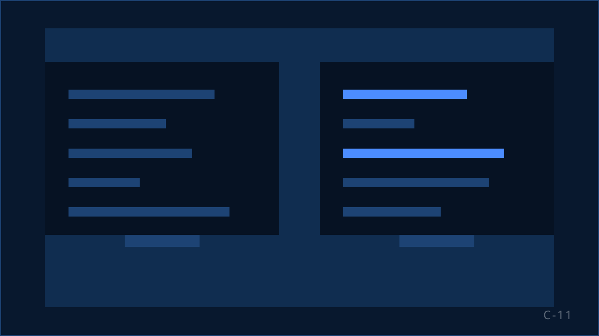

Twee samenwerkingen, van dichtbij
KISS bouwt en runt B2C-salesoperaties voor Nederlandse opdrachtgevers. Op deze pagina staat hoe dat er in de praktijk uitziet: wat de vraag was, wat wij hebben gedaan en wat de samenwerking heeft opgeleverd.

Case · Media en uitgevers
DPG Media: in ongeveer drie maanden naar circa 500 salesuren per week
De vraag
DPG Media had extra commerciële capaciteit nodig. Niet een handvol agents erbij, maar een salesoperatie die op korte termijn substantieel volume kon draaien en daarna mee kon groeien.
Wat KISS heeft gedaan
Recruitment
Wij hebben de mensen zelf geworven. Geen uitzendbureau ertussen, waardoor het tempo en de selectie in eigen hand bleven.
Het team opgebouwd
Van de eerste groep naar een volwaardig salesteam, in blokken met een eigen supervisor, zodat de aansturing meegroeide met de bezetting.
Training
Iedere agent is opgeleid voordat hij het eerste gesprek voerde, en daarna verder getraind op de campagne.
Operationele uitvoering
De dagelijkse aansturing van de operatie: bezetting, planning, coaching op de vloer en bijsturing op wat de cijfers lieten zien.
Het resultaat
Binnen ongeveer drie maanden is de operatie gecontroleerd opgeschaald naar circa 500 salesuren per week. Gecontroleerd, omdat recruitment, training en supervisie in hetzelfde tempo mee moesten groeien; dat is precies het punt waarop opschalen meestal misgaat.
KISS combineert commerciële performance met kwaliteit en schaalbaarheid. De communicatie is proactief, er wordt continu gestuurd op verbetering en afspraken worden nagekomen.
Case · Loterijen en goede doelen
Goede Doelen Loterijen: samenwerking sinds 2019
De vraag
In 2019 zocht Goede Doelen Loterijen aanvullende commerciële capaciteit. De eerste werkzaamheden waren voor de BankGiro Loterij, die inmiddels niet meer bestaat. De samenwerking heeft zich daarna verder ontwikkeld richting de Postcode Loterij en de VriendenLoterij.
Wat KISS doet
Deze samenwerking begint eerder in het proces dan alleen de uitvoering. KISS bouwt en richt campagnes in, werft en traint de mensen, voert de campagnes uit, verbetert ze waar dat kan en schaalt op wanneer dat past.
Winback
Voormalige deelnemers opnieuw benaderen met een aanbod dat past bij hun eerdere relatie.
Leadcampagnes en leadopvolging
Leads uit andere kanalen snel en gestructureerd opvolgen, zodat interesse niet stilvalt.
Commercieel inbound
Binnenkomende gesprekken waarin ook een commerciële stap wordt gezet.
Wat dit zegt over KISS
Een samenwerking die sinds 2019 loopt en zich in de breedte heeft ontwikkeld, zegt iets anders dan één geslaagde campagne. Het laat zien dat KISS meerdere soorten commerciële campagnes naast elkaar kan draaien, mee kan bewegen als het merkenlandschap van een opdrachtgever verandert, en over jaren heen betrokken blijft bij het opbouwen én verbeteren van die campagnes.
Wat in elke samenwerking hetzelfde is
Eigen team, zelf geworven en getraind
KISS werft de agents zelf en traint ze voordat zij het eerste gesprek voeren. Daarna volgt de campagnetraining op uw propositie.
Een vaste supervisor per team
Elke agent heeft een supervisor die meeluistert, beoordeelt en dagelijks coacht.
Sturing op wat er werkelijk gebeurt
Wat een gesprek oplevert gaat terug naar het script en naar het coachgesprek. Rapportage is geen eindproduct.
Hoe dat van briefing tot draaiende operatie werkt: Werkwijze
Uw campagne naast deze cases leggen? Bel Thomas.
Vertel welk volume, welke doelgroep en welk resultaat u zoekt. Referenties spreken kan; dat regelen wij in het gesprek.